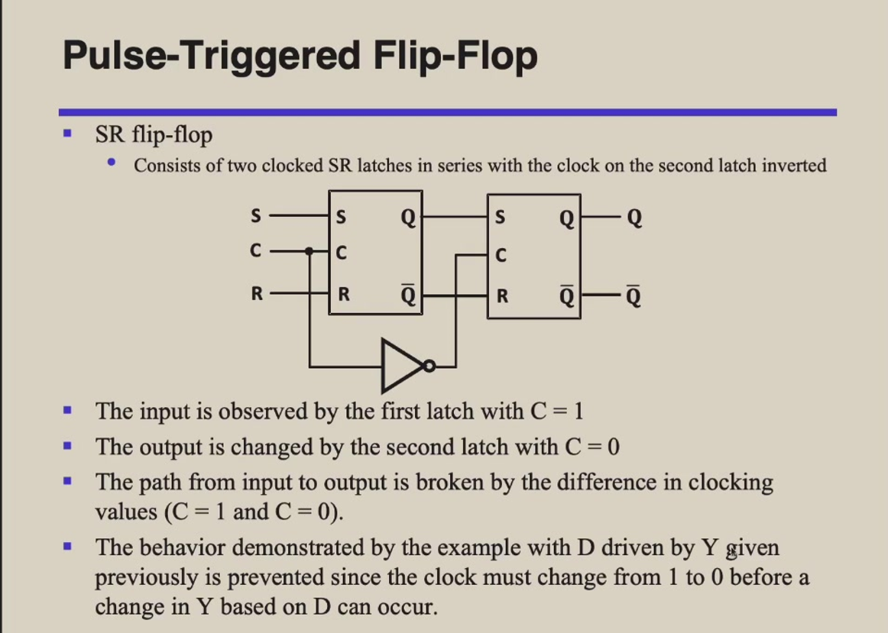
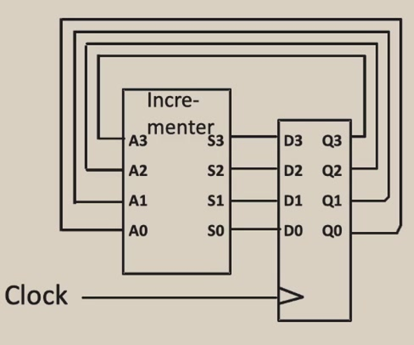

System1¶
In Class¶
Note
这些是课堂内容与书本不同步的地方,并且由于后半学期学业压力较大,所以后半部分部分课笔记没有记录,请谨慎参考
1. Foundations of Digital Logic¶
Logical Operations¶
- AND is denoted by a dot (.)
- OR is denoted by a plus(+)
- Not is denoted by an overbar(-),a single quote mark('),or (~)
Boolean algebra¶
\(F(X_{1},X_{2},\ldots) = X1*F(1,X_{2},\ldots) + \neg{X1}F(0,X_{2}),\ldots\)
- Boolean algebra: each variable have multiple values
- Switching algebra: each variable can be either 1 or 0
- Dual: and -> or,or->and,0->1,1->0
Logic functions¶
-
complement of a function:
- interchanging(· and +) and (0 and 1),and complementing each variable
- The complement of a function is not the same as the dual of a function
- \(F(x,y,z) = x\neg{y}\neg{z} + \neg{x}yz\) so \(G = F\prime = \neg{(x\neg{y}\neg{z})} · \neg{(\neg{x})yz}\)
-
Minterm and Maxterm
- Canonical Forms:
- Canonical Sum-Of-Products (sum of minterms) $ \sum $(minterms for 1 of the function)
- Canonical Products-Of-Sum (product of maxterms) $ \sum $(maxterms for 0 of the function)
Simplification of logic functions¶
- 卡诺图(Karnaugh Map)
- Bubble pushing
2. Combinational Logic Design¶
Introduction to Verilog HDL¶
- Sized numbers:
4'b1111,12;habc - Unsized numbers:
233232,'habc(Dafault base is decimal) - Negative numbers:
-6'd3(Two's complement is used to store the value)
About combinational logic circuits¶
- Combinational circuits are memory-less:The ouput value depends ONLY on the current input values
- Sequential circuits consist of combinational logic as well as memory elements(used to store certain circuit states):Outputs depend on BOTH current input values and previous input values(kept in the storage elements)
Some classic/basic designs¶
- multiplexer:多路复用器,多变少
- Demultiplexer:分路器,少变多
- Half adder:半加器,只能处理两个输入,不考虑进位
- Full adder:全加器,可以处理三个输入,考虑进位
Timing analysis¶
-
Circuit delay
- \(T_{pd}\) = max delay from input to output
- \(T_{cd}\) = min delay from input to output
-
The critical(longest) path:
- \(T_{pd}\) of the circut$ = \(\sum T_{pd}\) of the circuit elements along the critical path
-
The shortest path
- \(T_{cd}\) of the circuit = $\sum T_{cd} $ of the circuit elements along the shortest path
-
Race hazard(竞争风险):
- Glitch:when a single input change causes multiple output changes
3. Sequential Logic Design¶
Introduction to sequential circuits¶
- Sequentiala circuits consist of combinational logic as well as storage elements(used to store certain circuit states)
- Output depends on BOTH current input values and previous input values(kept in the storage elements)
output controlled by the level of the clock input
output changes only at the point in time when the clock changes from value to the other
Can be positive-edge triggered (0 to 1),or negative-edge triggered (1 to 0)
- latches(锁存器) flip-flops(触发器)
- Flip-flops are edge-triggered while clocked latches are level-sensitive
- The advantage of flip-flops ove latches is that the signal on the input pin is captured the moment the flip-flop is clocked,and subsequent changes to the inputs will be ignored until the next clock event.This provides better timing control in complex circuits
- Mealy machine:output depends on both the current state and the current input
- Moore machine:output depends only on the current state
- Synchronous(同步)
- Circuit output changes only at some dicrete instants of time
- Achieves synchronoization by using a timing signal called the clock(通过使用称为时钟的定时信号实现同步)
- Asynchronous(异步)
- Circuit output can change at any time(clockless)
- Terminology(术语):
- Finite State Machine
- State Diagram
- State Table
Basic sequential logic elements¶
- Bistable Circuit
- No input to control the state
- Stores 1 bit of state in the state variable


Aka(又名) SR Latch with Control input


 But it may have some problems: 1's and 0's catching
 This photo is Negative-edge triggered D flip-flop
This photo is Negative-edge triggered D flip-flop
Positive-edge triggered D flip-flop(standard flip-flop) is adding inverter to the clock input
The enable input(EN) controls when new data is stored(when EN = 1)
The reset input(R) forces the output to 0(when \(\overline{Reset} = 0\))
Two types: * Synchronous(同步): reset at the clock edge only * Asynchronous(异步): reset immediately when Reset = 1
Same as SR flip-flop except that J=K=1 is allowed(J = S,K = R)
For J=K=1,the flip-flop changes to opposite state

Has a single input T,Same as JK flip-flop withe J=k=T
* T=0,no change to state
* T=1,changes to opposite state

Sequential logic design¶
Please see the ppt in 2024/4/1 aanad 2024/4/3
Classic sequential logic elements¶

It will cause a ripple effect:delay in the output of the flip-flop

Use a common clock signal to all flip-flops 
4. Computational Operations & Units¶
Basic computational units¶
Prefix Adder: faster than carry-lookahead adder(感兴趣可自行了解,ppt只有简单介绍) 本节还包含加法器,减法器的内容,不过实验文档的内容已经很详细了
Fixed number operations¶
在乘法中,还有一个Booth Encoding的方法,可以百度速学.
Arithmetic logic unit(ALU)¶


乘法器与除法器的多种实现方式¶
5. Instruction Set Architecture(ISA)¶
- Elements of an ISA:
- Opcode:operation code
- Source Operand refrerence
- Result Operand reference
- Next Instruction reference
Operands and addressing modes¶
Operands


Addressing modes
ADD #5 Means add the number 5 to someting
This uses immediate addressing for the value 5
Must know value at assembly time
ADD 100 Means add the value at memory location 100 to something
Must know address at assembly time
Add [100] Means "The data at memory location 100 is an address.Go to the address stored there andd get that data and add it to the Accumulator"
Downside:Requires addtional memory access
Types of operations and encodings¶
Operations * Arithmetic and Logic * Shift * Data Transfer:MOV/LOAD/STORE * String * Contorl * System * Input/Output Encodings * Variable * Fixed * Hybrid
RISC(精简指令集计算机) and CISC(复杂指令集计算机)¶
此处内容需要大量图来理解,所以建议看智云的PPT
GPRs:General Purpose Registers